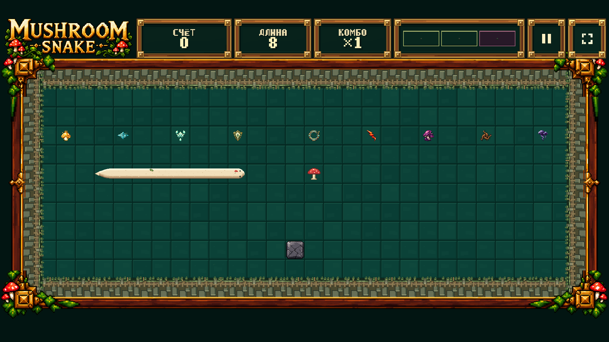
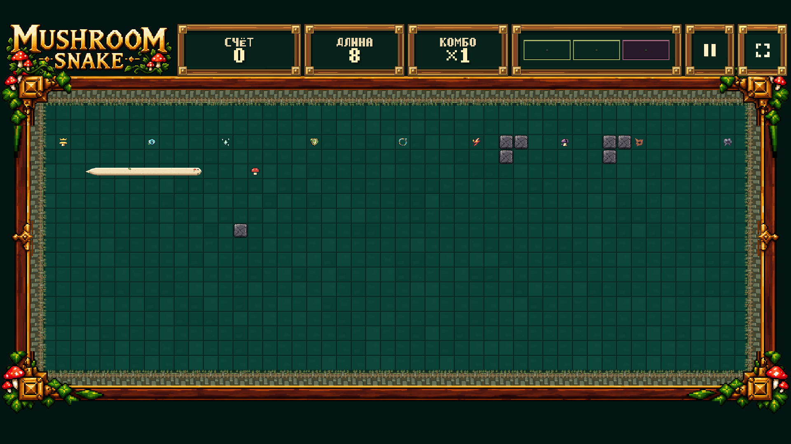
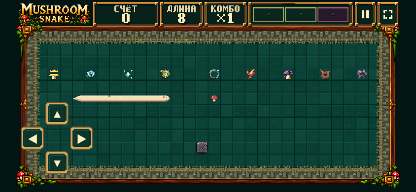
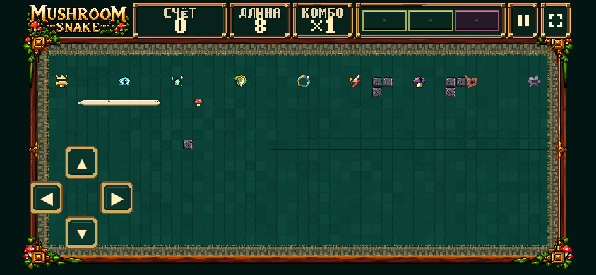
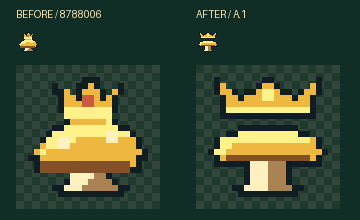

Playable DEV Effect Playground · starts with all nine staged pickups, paused. Space resumes play. NORMAL RUN restores natural spawning. Approval is recorded only for the exact forty pickup/HUD/idle/food keys; no Pass B VFX.
Native-size captures below scroll horizontally if needed; they are not resized art sheets. All use the actual live renderer. Far-world previews retain their canonical simulation stage/topology, with a read-only Forest appearance override for art comparison. For frozen mobile captures only, the pause card is hidden and the unchanged D-pad is shown; live touch input is tested separately.





Targeted browser evidence · Verification and scope. No TEST/Production deployment. Stop for human gameplay/art review.